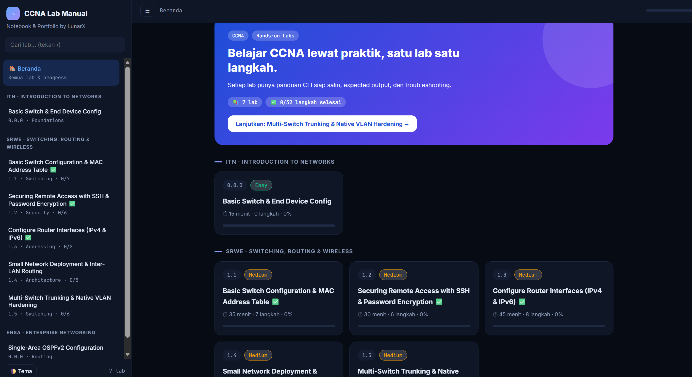

Operating at the confluence of Linux system internals, high-performance routing, encrypted tunnels, and active defensive monitoring. Builder of self-hosted network laboratories and educator deconstructing complexity into transparent schematics.

Web simulasi lab jaringan interaktif untuk konfigurasi Cisco Packet Tracer, routing protokol, dan pembedahan topologi.
Interactive web laboratory and documentation environment for Cisco Packet Tracer simulations, routing protocols (OSPF, EIGRP), and subnetting practices.
Tactile browser topology sketching engine with CIDR subnet calculation, 802.1Q VLAN matrix validation, and Cisco IOS export.
Cryptographic hub linking remote VPS and edge nodes to a central MikroTik core router with ChaCha20-Poly1305 keepalive.
Real-time threat detection, file integrity tracking (FIM), and syslog aggregator correlating root escalations across homelab VMs.
Simulasi paket Ethernet frame asli menunjukkan bagaimana 4-byte 802.1Q header disuntikkan di antara MAC address dan EtherType saat melintasi port trunk.
Visualisasi pembedahan frame Ethernet dan kalkulasi MTU overhead 4-byte pada frame trunking.
Mengapa VPN sering macet saat buka HTTPS dan cara mengatasi packet drop dengan iptables TCPMSS mangle.
Membedakan traffic SYN-Stealth scan nmap dengan koneksi sah melalui filter TCP flags dan window sizing.
Step-by-step cryptographic tracing of Curve25519 diffie-hellman key exchanges, replay counter protection, and resolving PPPoE MTU fragmentation across upstream carriers.
Extracting XOR-obfuscated ELF payloads injected into echo ping request packets using `tshark`, custom Python unpackers, and binwalk signature offsets.
Building an un-routable private subnet environment exposing homelab web applications without opening a single router port or exposing WAN IP addresses.
Validasi routing dinamis, bandwidth management/QoS, firewall filtering, dan tunneling.
Kompetensi konfigurasi VLAN, OSPF multi-area, EtherChannel, dan defensive switch port security.
Analisis log telemetri Wazuh SIEM, packet carving Wireshark, dan mitigasi brute-force.